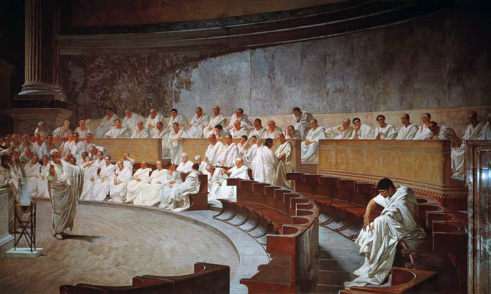

Róma
Alapításának története a mondák ködébe vész. A legenda szerint a várost a rómaiak hadistenének, Marsnak a fiai, Romolusz és Rémusz alapította.

Alapításának története a mondák ködébe vész. A legenda szerint a várost a rómaiak hadistenének, Marsnak a fiai, Romolusz és Rémusz alapította.
A mondák szerint Róma első királya Romulus volt, és őt még hat követte. Közülük az utolsó három etruszk királyt valós személynek tartják.
A Római Köztársaság az ókori Róma i. e. 509-től i. e. 27-ig tartó második korszaka, mely a Római Királyságot váltotta le, és amely után a Római Császárság időszaka következett. Ebben a korszakban indult el Itália és a Földközi-tenger medencéjének más területeinek a meghódítása is, mely hatalmas birodalommá tette a köztársaságot és a későbbi császárságot.
A Római Birodalom (latinul Imperium Romanum) az ókori Róma által létrehozott államalakulat volt a Földközi-tenger medencéjében. Örökségét közvetlenül a Keletrómai (Bizánci) Birodalom vitte tovább, melynek fővárosa Konstantinápoly volt, de kulturális hatásai a mai napig érezhetőek az európai élet számos területén.

A római császár a császári időszak alatt a Római Birodalom uralkodója volt. A császárok a történelem során különféle címeket használtak. Amikor egy adott rómait angolul „császárnak” neveznek, az gyakran az Augustus cím felvételét tükrözi.